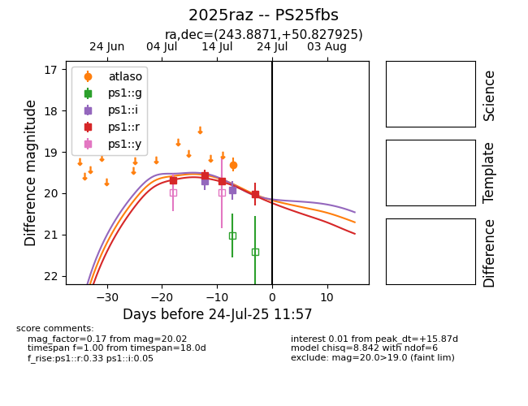

Target 2025raz at 2025-07-24 11:57, see:
TNS: wis-tns.org/object/2025raz
YSE: ziggy.ucolick.org/yse/transient_detail/2025raz
alt names
2025raz (yse,tns)
PS25fbs (panstarrs)
coordinates:
equatorial (ra, dec) = (243.8871,+50.82793)
galactic (l, b) = (78.9482,+44.99719)
photometry
last atlaso=19.31, ps1::i=19.93, ps1::r=20.02
1 atlaso, 2 ps1::i, 4 ps1::r detections
